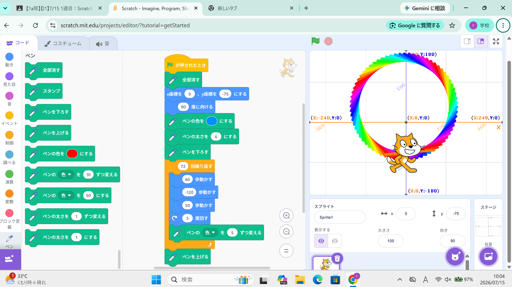

1-1 サイエンスアート

1.内容
旗マークが押されると画面上のインクが消えたあとペンの太さや色が決まる。繰り返しブロックで60歩動き―120歩動き50歩動くその後、スプライトが5度回転し色が”5”変化する。これらを繰り返すとカラフルな円のような模様が描ける。
2.感想
ペンの太さの数値を1太くしたらかなり太くなるし、角度の数値を1度大きくしたら全然違う形になってしまうから綺麗な円を描くのが難しいなと思った。ペンの色の数値を変えるとすごく色が濃くなったり、薄くなったりして見ていて楽しかった。